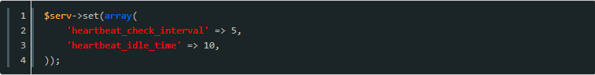

正常情况下客户端中断TCP连接时，会发送一个FIN包，进行4次断开握手来通知服务器。但一些异常情况下，如客户端突然断电断网或者网络异常，服务器可能无法得知客户端已断开连接。
尤其是移动网络，TCP连接非常不稳定，所以需要一套机制来保证服务器和客户端之间连接的有效性。
Swoole扩展本身内置了这种机制，开发者只需要配置一个参数即可启用。Swoole在每次收到客户端数据会记录一个时间戳，当客户端在一定时间内未向服务器端发送数据，那服务器会自动切断连接。
使用方法：

上面的设置就是每5秒侦测一次心跳，一个TCP连接如果在10秒内未向服务器端发送数据，将会被切断。
高级用法：
使用swoole_server::heartbeat()函数手工检测心跳是否到期。此函数会返回闲置时间超过heartbeat_idle_time的所有TCP连接。程序中可以将这些连接做一些操作，如发送数据或关闭连接。
以上是文章全部内容，有需要学习交流的友人请加入交流群的咱们一起，有问题一起交流，一起进步！前提是你是学技术的。感谢阅读！